인터넷정보관리사-2급 (2016-06-11 기출문제)
1과목: 인터넷의 이해
1. 다음 중 인터넷의 개념에 대한 설명으로 옳은 것은?
- 송·수신되는 데이터의 보안을 위해 중앙 통제기구가 존재한다.
- TCP/IP라는 인터넷 표준 프로토콜로 연결된다.
- 인터넷의 효시는 전용선망인 HANA/SDN 망이다.
- stand-alone system으로 이뤄진 독립형 시스템이다.
(정답률: 69%)

2. 다음 중 W3C(The World Wide Web Consortium)에 대한 설명으로 옳은 것은?
- 인터넷 할당 번호 관리기관의 약자이다.
- 인터넷주소공간할당에대한책임을가지고있다.
- WWW의 기술적, 사회적 확산을 위해 구성된 전세계적 단체이다.
- 아시아ㆍ태평양 지역 인터넷 관련 서비스 수행 기구이다.
(정답률: 66%)
3. 다음에서 설명하는 업무를 수행하는 국내 인터넷 관련 기관으로 옳은 것은?
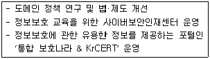
- 방송통신위원회
- 한국정보통신기술협회
- 한국인터넷진흥원
- 한국정보화진흥원
(정답률: 50%)
4. 사설 IP 주소에 대한 설명으로 옳은 것은?
- 초대형 네트워크에 주로 사용된다.
- A클래스의 IP 어드레스를 주로 사용한다.
- 개인이나 기관이 사용할 때는 공인 기관에 허락을 받아야 한다.
- 네트워크를 직접 연결하지 않을 때 임의로 사용할 수 있는 IP 어드레스이다.
(정답률: 43%)
5. 다음에서 설명하고 있는 주소에 대한 설명으로 옳은 것은?
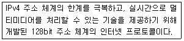
- 기존의 IPv4와는 혼용하여 사용할 수는 없다.
- IPSec을 탑재하여 인증 기능과 보안 기능을 동시에 제공한다.
- 주소할당 방식은 클래스 단위의 비순차적 할당 방식이다.
- 약 43억개의 주소 공간으로 주소 고갈에 대한 문제를 해결하였다.
(정답률: 33%)
6. 다음제시된 도메인주소에대한 설명으로옳은것은?
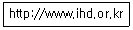
- 이 기관명 또는 도메인명은 ihd 이다.
- 이 주소를 통해 호스트 이름을 파악할 수는 없다.
- 이 기관은 행정 기관(정부조직기관)임을 알 수 있다.
- 이 주소에는 국가별 최상위 도메인이 생략되어 있다.
(정답률: 52%)
7. TCP/IP 프로토콜에서 전송 계층에 해당하는 프로토콜은?
- IP
- FTP
- UDP
- SLIP/PPP
(정답률: 39%)
8. 다음 중 OSI 7계층에 대한 설명과 이에 해당하는 계층이 알맞게 짝지어진 것은?
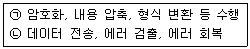
- ㉠-세션계층, ㉡-물리계층
- ㉠-표현계층, ㉡-물리계층
- ㉠-세션계층, ㉡-데이터링크계층
- ㉠-표현계층, ㉡-데이터링크계층
(정답률: 39%)
9. 다음 중 동관이의 인터넷 사용 방식에 적절한 프로토콜은?
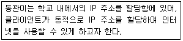
- NFS
- POP
- DHCP
- Telnet
(정답률: 50%)
10. 발송한 전자 우편(메일)이 다음과 같은 사유로 반송되었을 때 이에 대한 조치사항으로 적절한 것은?
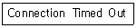
- 수취인의 ID를 확인한다.
- 수신자에게 수신 거부 설정 해제를 요청한다.
- 수신측 호스트 메일 서버가 정상적으로 동작하는 지를 확인한다.
- 전자 우편 메일 주소의 호스트나 도메인의 이름을 확인한다.
(정답률: 58%)
11. 다음에서 설명하고 있는 인터넷 서비스의 Well-Known 포트로 적절한 것은?
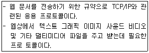
- FTP-21
- Telnet-23
- HTTP-80
- TCP-1023
(정답률: 41%)
12. 다음 홍보 내용에서 알 수 있는 전자상거래의 유형으로 옳은 것은?
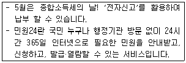
- B to B
- B to C
- G to B
- G to C
(정답률: 35%)
13. 다음 설명에 해당하는 소셜미디어로 가장 적절한 것은?
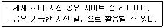
- 유튜브
- 플리커
- 링크드인
- 미투데이
(정답률: 56%)
14. 다음 중, PaaS(Platform as a Service)에 해당하는 서비스는?
- Google App Engine
- iCloud
- Dropbox
- Naver Cloud
(정답률: 52%)
15. 다음 설명에 해당하는 용어는?
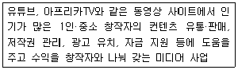
- Fintech
- Omni Channel
- O2O(Online to Offline)
- MCN(Multi Channel Network)
(정답률: 43%)
16. 다음 설명에 해당하는 IT 용어로 옳은 것은?
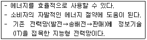
- LTE
- 아이비콘
- 스마트 그리드
- 유비쿼터스 센서 네트워크
(정답률: 50%)
17. 다음과 같은 경우에 공통으로 적용된 기술로 적절한 것은?
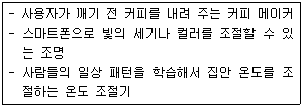
- Internet of Things
- Trigger
- Quick Response Code
- Big Data
(정답률: 42%)
18. 다음 중 개인정보 사용에 대한 동의를 받을 때 정보주체에게 알려야 하는 사항이 알맞게 짝지어진 것은?
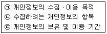
- ㉠
- ㉡
- ㉠, ㉢
- ㉠, ㉡, ㉢
(정답률: 50%)
19. 다음 중 개인정보 처리방침 중 해당 사항이 발생하는 경우에만 처리방침을 정하도록 하는 사항은?
- 개인정보의 처리 목적
- 개인정보의 처리 및 보유 기간
- 개인정보의 제3자 제공에 관한 사항
- 정보주체의 권리ㆍ의무 및 그 행사방법에 관한 사항
(정답률: 34%)
20. 다음 중 보호받지 못하는 저작물로 옳은 것은?
- 사진저작물
- 영상저작물
- 법률ㆍ조약ㆍ명령
- 컴퓨터프로그램저작물
(정답률: 67%)
21. 다음 설명하는 저작권의 기술적 보호 방법에 해당하는 것은?
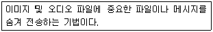
- DRM
- 암호화 기술
- 스테가노그라피
- 디지털 워터마킹
(정답률: 32%)
22. 공인인증서의 발급과 관련한 설명으로 옳은 것은?
- 공인인증기관은 정부 관리기관으로 1개로 통합관리 한다.
- 공인인증서에는 공인인증서의 유효기간을 포함하여야 한다.
- 공인인증서 발급에 따른 필요한 사항은 교육부령으로 정한다.
- 공인인증서 발급 시 이용범위 또는 용도를 제한할 수는 없다.
(정답률: 70%)
23. 다음에서 설명하고 있는 공인인증서 관련 용어로 옳은 것은?
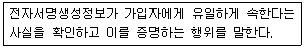
- 인증
- 서명자
- 전자서명
- 전자서명검증정보
(정답률: 57%)
24. 다음 설명에 공통으로 해당하는 장치로 옳은 것은?
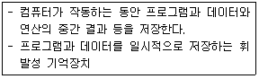
- SSD
- DRAM
- 하드디스크
- 플래시 메모리
(정답률: 50%)
25. 다음 중 시스템 소프트웨어에 해당하는 프로그램으로 알맞게 짝지어진 것은?
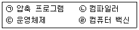
- ㉠, ㉡
- ㉠, ㉣
- ㉡, ㉢
- ㉢, ㉣
(정답률: 59%)
26. 다음에서 설명하고 있는 운영체제의 평가기준으로 적절한 것은?
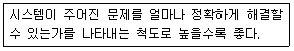
- 신뢰도
- 변환 시간
- 처리 능력
- 사용 가능도
(정답률: 45%)
27. 다음 중 운영체제의 제어 프로그램으로 가장 거리가 먼 것은?
- 감시 프로그램
- 데이터 관리 프로그램
- 서비스 프로그램
- 작업 관리 프로그램
(정답률: 59%)
28. 다음에서 설명하는 네트워크 장비로 옳은 것은?
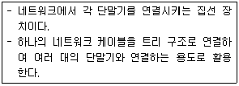
- 허브
- 라우터
- 랜카드
- 게이트웨이
(정답률: 57%)
29. 다음 중 다운로드 속도와 업로드 속도가 서로 다른 xDSL 기술에 해당하는 것은?
- ADSL
- SDSL
- HDSL
- MODEM
(정답률: 44%)
30. 다음 중 발생된 에러의 원인이 서버 측에 속하는 에러 코드를 모두 고른 것은?
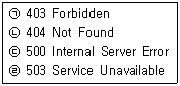
- ㉠, ㉡
- ㉠, ㉣
- ㉡, ㉢
- ㉢, ㉣
(정답률: 39%)
31. 다음 중 제시된 작업이 이뤄지는 홈페이지의 구축 과정으로 적절한 것은?
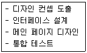
- 기획 단계
- 제작 단계
- 등록 단계
- 홍보와 유지 보수 단계
(정답률: 55%)
32. 다음에서 설명하는 이미지 파일의 형식으로 옳은 것은?
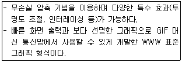
- EPS
- PCX
- PNG
- TIFF
(정답률: 58%)
33. 다음 중 플러그인 프로그램의 설명으로 옳은 것은?
- 웹 브라우저의 실행과 함께 같이 실행된다.
- 대부분 유료로 제공되는 상용 소프트웨어이다.
- 멀티미디어 요소를 제대로 활용할 수 있도록 지원한다.
- 웹 브라우저의 기능을 확장해 주는 내장 프로그램이다.
(정답률: 52%)
2과목: 인터넷 자원 탐색
34. 다음 중 웹 브라우저로 할 수 있는 일이 아닌 것은?
- 전자우편을 사용할 수 있다.
- 원하는 웹 사이트에 쉽게 접속할 수 있다.
- 자주 이용하는 웹 사이트의 목록을 관리할 수 있다.
- 웹브라우저를 통해 기본적으로 볼 수 있는 파일 형식은 htm, jpg, gif 뿐만 아니라, xlsx, ppt도 가능하다.
(정답률: 55%)
35. 다음 중 웹 브라우저의 개념으로 가장 거리가 먼 것은?
- 인터넷에 연결된 웹 서버에 저장되어 있는 하이퍼텍스트와 하이퍼미디어 정보를 불러와 보여주는 역할을 한다.
- 웹 브라우저는 웹 서비스 뿐만 아니라, E-Mail, FTP, Usenet 등의 서비스도 함께 제공한다.
- 동시에 여러 개의 웹 브라우저에서 데이터 검색 및 다운로드를 하는 것은 불가능하다.
- 웹 브라우저의 주소 표시줄에 URL 형식을 입력하여 자료를 요청하면 해당 서버에서 문서를 가져와 클라이언트에게 보여주는 사용자 인터페이스 역할을 한다.
(정답률: 67%)
36. 다음 중 웹 브라우저 자체에서 지원하는 이미지 파일 형식이 아닌 것은?
- GIF
- PCX
- PNG
- JPG
(정답률: 57%)
37. 다음 중 미국 캔사스 대학의 로우 몬틀리가 UNIX VMS 운영체제 사용자들을 위해 개발한 텍스트 기반의 웹 브라우저는?
- Arachne
- Samba
- Opera
- Lynx
(정답률: 47%)
38. 다음 중 1993년 NCSA에서 개발하였으며, 하나의 창에 텍스트와 이미지를 동시에 출력한 최초의 웹 브라우저는?
- Cello
- Mosaic
- HotJava
- Netscape Communicator
(정답률: 55%)
39. 인터넷 익스플로러11의 기능 중 즐겨찾기에 등록된 내용을 가져오거나 내보내기를 실행할 수 있는 메뉴는?
- 파일
- 편집
- 즐겨찾기
- 도구
(정답률: 25%)
40. 인터넷 익스플로러11에서 다음 웹 사이트 주소를 보내기 기능을 이용하여 전송하고자 한다. 이 보내기 기능으로 할 수 있는 일이 아닌 것은?
- 파일로 보내기
- 메일로 페이지 보내기
- 전자 메일로 링크 보내기
- 바탕 화면에 바로 가기 만들기
(정답률: 35%)
41. 인터넷 익스플로러11에서 검색된 웹 사이트를 인쇄하고자 한다. 이때 웹 사이트 내의 배경색과 이미지 인쇄 여부를 설정할 수 있는 메뉴는?
- [파일]-[속성]
- [파일]-[인쇄]
- [파일]-[페이지 설정]
- [도구]-[인터넷 옵션]
(정답률: 42%)
42. 다음 중 인터넷 익스플로러11의 별모양 아이콘( )에 해당하는 크롬의 기능은?
- 확장 프로그램
- 작업 관리자
- 다운로드
- 북마크
(정답률: 74%)
43. 크롬의 설정 메뉴에서 다음 기능을 설정할 수 있는 위치는?
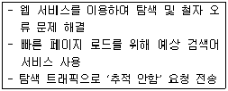
- 개인정보
- 웹 콘텐츠
- 네트워크
- 시스템
(정답률: 18%)
44. 다음 중 크롬의 시크릿 모드로 웹 사이트에 접속할 때 보호되지 않고 그대로 남아 있는 것은?
- 검색 기록
- 쿠키 저장소
- 다운로드한 파일 및 생성한 북마크
- 브라우저의 방문 기록
(정답률: 54%)
45. 다음 중 모질라 재단에서 제작한 웹 브라우저로 광고차단 기능인 'Adblock' 기능과 XML-RPC를 지원하는 블로그 사용시, 'Performancing' 기능을 사용하여 블로그에 접속하지 않고 글을 작성할 수 있게 해주는 웹 브라우저는?
- Internet Explorer
- Chrome
- Firefox
- Opera
(정답률: 67%)
46. 다음 중 검색엔진이 일반적으로 갖추어야 할 요건이 아닌 것은?
- 검색 속도가 빨라야 한다.
- 다양한 검색 옵션을 제공해야 한다.
- 사용자에게 편리한 인터페이스를 제공해야 한다.
- 긴 기간 단위의 주기적인 업데이트로 최신의 자료를 제공해야 한다.
(정답률: 50%)
47. 다음 중 효율적인 검색엔진의 활용법이 아닌 것은?
- 검색하고자 하는 정보의 종류에 따라 적절한 검색엔진을 선택한다.
- 주제별 분류 서비스를 이용하거나 키워드 검색을 활용한다.
- 검색 시 검색 계획을 세우고 계획에 따라 검색한다.
- 유명한 검색엔진 하나만을 사용한다.
(정답률: 70%)
48. 다음 프로그램 중 성격이 다른 하나는?
- Spider
- Crawler
- Malware
- Scooter
(정답률: 53%)
49. 다음 중 로봇이 정리한 웹 페이지의 내용을 저장하고 있는 거대한 도서관으로 카탈로그로도 불리는 것은?
- 웜
- 색인기
- 검색엔진 서버
- 검색엔진 소프트웨어
(정답률: 54%)
50. 다음 중 검색엔진 소프트웨어에 대한 설명으로 틀린 것은?
- 검색이 요청되었을 때, 색인으로부터 검색 조건에 맞는 정보들을 추출한다.
- 추출된 정보들을 검색자가 원하는 정보에 가장 적합하다고 판단되는 순서대로 정렬한다.
- 정렬된 정보들은 웹 브라우저의 화면에 출력한다.
- 출력 순위는 검색엔진에 관계없이 동일한 결과를 보여준다.
(정답률: 60%)
51. 다음 중 로봇이 웹에 미치는 영향이 아닌 것은?
- 외부 침입으로부터 자료 보호
- 네트워크 트래픽 발생에 의한 속도 저하
- CGI 프로그램 소스 파손
- PC 및 MAC을 서버로 사용하는 사이트의 시스템 다운
(정답률: 53%)
52. 다음 중 검색엔진의 로봇이 특정 웹 페이지에 접근하여 인덱싱을 할 수 없게 하는 메타 태그로 맞는 것은?
- <META name=“robots” content=“disindex”>
- <META name=“robots” content=“noindex”>
- <META name=“robot” content=“disindex”>
- <META name=“robot” content=“noindex”>
(정답률: 42%)
53. 다음 중 검색엔진 구축 방식 중의 하나인 매뉴얼 인덱스 방식에 대한 설명으로 맞는 것은?
- 웹 사이트의 관리자가 특정 검색엔진에 자신의 홈페이지 정보를 직접 등록하는 방식이다.
- 로봇이라는 프로그램을 이용하여 웹 사이트의 정보를 수집하고 인덱싱하여 등록하는 방식이다.
- 에이전트 인덱스 방식보다 정보의 양은 많다.
- 에이전트 인덱스 방식보다 정보의 질은 낮다.
(정답률: 46%)
54. 다음에서 설명하는 검색 결과의 제공 방식에 해당하는 것은?
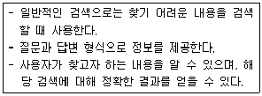
- 디렉토리 검색
- 카테고리 검색
- 웹 문서 검색
- 지식 검색
(정답률: 50%)
55. 다음에서 설명하는 검색 결과의 평가 척도에 해당하는 것은?
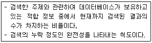
- 정도율
- 재현율
- 정확률
- 적합률
(정답률: 43%)
56. 검색엔진에서 특정 키워드를 입력하여 검색된 50개의 결과 중에서 40개가 적합 정보로 판정 되었다. 이 경우 정도율은 몇 %인가?
- 65%
- 70%
- 75%
- 80%
(정답률: 56%)
57. 다음은 어떤 검색엔진에서 '인터넷정보관리사 2급'을 검색어로 입력하여 조회한 결과를 나타낸 것이다. 이에 해당하는 검색엔진은?
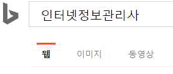
- 빙
- 구글
- 야후
- 써치닷컴
(정답률: 61%)
58. 홈페이지 제작자가 자신의 홈페이지가 검색엔진의 검색결과에서 상위에 링크되도록 하기 위해 페이지 내에 동일한 키워드를 연속해서 반복 입력하는 행위를 무엇이라고 하는가?
- 스푸핑
- 스누핑
- 스패밍
- 스니핑
(정답률: 50%)
59. 다음 중 정보검색 시 사용하는 논리 연산자가 아닌 것은?
- OR
- NOT
- AND
- NEAR
(정답률: 72%)
60. 정보검색 시 다음 단어와 관련 있는 용어는?
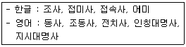
- Leakage
- Garbage
- Stop Word
- Thesaurus
(정답률: 32%)
61. 다음 중 정보검색 시 가장 정확한 정보를 얻기 위한 방법으로 맞는 것은?
- 리키지를 최소화하고 개비지는 최대화한다.
- 리키지를 최대화하고 개비지는 최소화한다.
- 리키지와 개비지 모두 최소화한다.
- 리키지와 개비지 모두 최대화한다.
(정답률: 52%)
62. 키워드로 입력한 단어에 *나 ?의 와일드 카드 문자를 붙여 어미나 어두를 확장하여 검색하는 기능은?
- 구문 검색
- 절단 검색
- 자연어 검색
- 결과내 재검색
(정답률: 43%)
63. 다음 중 정보검색 시 바람직한 검색식 수립에 대한 설명으로 가장 거리가 먼 것은?
- 대문자와 소문자는 구분하지 않는다.
- URL 검색 옵션과 같은 확장 기능을 사용한다.
- 키워드 선정 시 주제와 관련하여 다양하게 고려한다.
- 논리 연산자와 인접 연산자의 사용법을 정확하게 파악한 후 사용한다.
(정답률: 47%)
64. 다음 중 정보관리사의 역할에 대한 설명으로 가장 거리가 먼 것은?
- 정보 중개인은 수집된 자료나 정보를 필요한 사람에게 제공한다.
- 정보 분석가는 고객의 요구에 알맞은 정보를 검색ㆍ분석하여 제공한다.
- 정보 컨설턴트는 수집된 정보를 토대로 새로운 예측정보와 전략정보를 제시한다.
- 정보의 선택자는 정보의 불평등에 따른 이용자의 요구에 맞는 정보를 선별하고 제공한다.
(정답률: 54%)
65. 다음 인터넷 정보원 중 성격이 다른 하나는?
- 초록지
- 학위논문
- 학술잡지
- 기술보고서
(정답률: 57%)
66. 개개의 자료를 명확하게 식별할 수 있도록 저자, 서명, 판차, 출판사항 등을 기술하여 그 기록을 일정한 순서대로 배열하여 편성한 것으로 특정 자료를 검색하기 위한 도구로 활용하는 것은?
- 색인
- 서지
- 백과사전
- 텍스트북
(정답률: 30%)
3과목: 인터넷 윤리
67. 스피넬로가 제시한 인터넷 윤리의 4가지 규범 원리 중 다음에서 설명하는 것은?
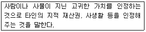
- 존중의 원리
- 정의의 원리
- 책임의 원리
- 해악금지의 원리
(정답률: 50%)
68. 인터넷 관련 용어에 대한 설명으로 옳은 것은?
- 악플 : 정보통신망이 제공하는 새로운 공간에서 활동하는 사람을 지칭한다.
- 판옵티콘 : 대중이 권력자를 감시하고 이를 통해 통제할 수 있는 원리를 말한다.
- 옵트인 : 수신자가 메시지의 수신을 허용했을 때에만 광고 메시지를 발송할 수 있도록 한 것을 의미한다.
- IP실명제 : 주민등록번호로 신분이 확인된 사람만 온라인 게시판에 의견을 올릴 수 있도록 한 제도를 말한다.
(정답률: 50%)
69. 이메일을 보낼 때 지켜야 할 네티켓으로 틀린 것은?
- 첨부파일의 용량이 크면 반드시 압축하여 보낸다.
- 전자우편은 자주 점검하고 필요한 자료 외에는 삭제한다.
- 광고성 전자우편을 보낼 때에는 제목에 '광고'라는 문구를 명시한다.
- 회원들을 대상으로 전자우편을 보낼 때에는 '수신 거부' 기능을 제공하지 않는다.
(정답률: 75%)
70. 네티즌이 지켜야할 각종 커뮤니티 관련 네티켓중 채팅을 할 때 지켜할 사항으로 가장 거리가 먼 것은?
- 만나고 헤어질 때는 간단히 인사를 한다.
- 유행하는 외계어보다 올바른 언어를 사용하는 것이 좋다.
- 채팅방에서 만난 잘 모르는 사람이라도 오프라인에서 만나 인맥을 넓힐 수 있도록 한다.
- 엔터키를 이용하여 문장을 너무 길게 하지 않고 적절한 문장 단위로 작성한다.
(정답률: 69%)
71. 사이버 범죄를 일반 사이버 범죄와 사이버 테러형 범죄로 분류했을 때 사이버 테러형 범죄에 해당하는 것은?
- 해킹
- 불법 복제
- 사이버 성폭력
- 불법 유해사이트 개설
(정답률: 60%)
72. 결혼식 초대, 돌잔치 초대 등을 내용으로 하는 스마트폰 문자메시지를 보내 소액결제를 유도하는 인터넷 사기 수법은?
- 비싱(Vishing)
- 피싱(Phishing)
- 파밍(pharming)
- 스미싱(SMishing)
(정답률: 63%)
73. 다음 사례와 같은 문제가 생기지 않도록 예방하기 위해 소비자가 이용할 수 있는 제도로 가장 적절한 것은?
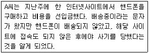
- 옵트 인 제도
- 옵트 아웃 제도
- 온라인 우표제
- 에스크로 제도
(정답률: 50%)
74. 보이스 피싱 사기를 예방할 수 있는 방법으로 가장 거리가 먼 것은?
- 가족과 비상시 연락을 위해 가족의 친구나 교사 등의 연락처를 미리 알아둔다.
- 블로그 등에 전화 번호, 사진 등 자신과 가족의 개인정보를 자세하게 게시하지 않는다.
- 현금지급기를 이용하여 세금 또는 보험료를 환급해 준다는 전화에 일체 대응하지 않는다.
- 신뢰할만한 쇼핑몰을 이용하고 고객게시판이 있는지를 찾아서 배송지연, 항의 글이 있는 지를 확인한다.
(정답률: 60%)
75. 다음 중 인터넷 중독을 설명하는 용어로 가장 거리가 먼 것은?
- 웨바홀리즘(Webaholism)
- 디지털 디톡스(Digital detox)
- 인터넷 의존(Internet Dependence)
- 인터넷 증후군(Internet Syndrome)
(정답률: 57%)
76. 인터넷 중독의 원인 중 사이버공간의 특성과 관련된 것은?
- 우울증
- 재미와 호기심
- 급속한 사회변화
- 사회문화적 통제시스템 부족
(정답률: 47%)
77. 다음 중 한국정보화진흥원에서 분류한 인터넷 중독의 유형과 가장 거리가 먼 것은 ?
- 정보검색 중독
- 컴퓨터 중독
- 인터넷 게임 중독
- 사이버 채팅 중독
(정답률: 31%)
78. 다음 설명은 중증 인터넷 중독 치료과정 중 어떠한 단계에 해당하는가?
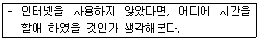
- 허비한 시간 검토
- 현상파악
- 상황파악
- 협조의뢰
(정답률: 58%)
79. 다음 빈칸에 들어갈 내용으로 옳은 것은?
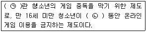
- ㉠ : 셧다운제，㉡ : 심야 12시 ~ 새벽 3시
- ㉠ : 셧다운제，㉡ : 심야 12시 ~ 새벽 6시
- ㉠ : 쿨링오프제，㉡ : 심야 12시 ~ 새벽 3시
- ㉠ : 쿨링오프제，㉡ : 심야 12시 ~ 새벽 6시
(정답률: 75%)
80. 인터넷 중독을 예방할 수 있는 방법으로 적합한 것은?
- 컴퓨터는 개인공간에 설치하는 것이 좋다.
- PC방에 갈 때에는 가급적 혼자 가는 것이 좋다.
- 컴퓨터 사용시간은 가족들과 협의하여 결정한다.
- 컴퓨터를 사용할 때 사용 시간을 확인할 필요는 없다.
(정답률: 66%)